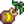

Platanero
| Platanero | |
 | |
| Información | |
| Brote: |  Brote de platanero |
| Origen(es) de brote: | |
| Producto: | |
| Tiempo de crecimiento: | 28 días |
| Estación de cosecha: | |
El Platanero es un tipo de árbol frutal. Se puede comprar al Comerciante isleño por 5 Dientes de dragón, o encontrarlo en un Coco dorado cuando se rompe. Tarda 28 días en madurar, después de lo cual producirá un Plátano cada día durante el Verano en Stardew Valley o durante todo el año en Isla Jengibre. Solo puede crecer en el centro de un cuadrado de 3x3, cada uno de los cuales debe mantenerse completamente libre de objetos, pisos y características del terreno (incluida la hierba). La cuadrícula de 3x3 no debe superponerse a la cuadrícula de 3x3 de otro árbol frutal.
Por cada año completo después de la maduración, los árboles frutales producirán frutos de mayor calidad, hasta la calidad de estrella de iridio después de tres años. Tenga en cuenta que el cuadrado de 3x3 alrededor del árbol no tiene que mantenerse despejado una vez que el árbol haya crecido por completo.
Si es alcanzado por un rayo durante una tormenta, un árbol frutal producirá Carbón durante 4 días en lugar de fruta.
Se pueden plantar árboles frutales en el Invernadero.
Fases de crecimiento
| Fase 1 | Fase 2 | Fase 3 | Fase 4 | Fase 5 - Primavera, Verano, Otoño, Invierno |
|---|---|---|---|---|
 |
 |
 |
 |
 |
| 7 Días | 7 Días | 7 Días | 7 Días | Total: 28 Días |
Galería
Historial
- 1.5: Introducido.
| Árboles | |
|---|---|
| Árboles | Arce • Palmera • Pino • Roble • Árbol de caoba |
| Árboles frutales | Albaricoquero • Cerezo • Granado • Manzano • Melocotonero • Naranjo • Platanero • Árbol de mango |
| Semillas | Bellota • Piña • Semilla de arce • Semilla de caoba • Semilla de árbol místico • Semilla musgosa |
| Fruta | Albaricoque • Cereza • Granada • Manzana • Melocotón • Naranja • Mango • Plátano |
| Otros | Árbol místico • Árbol seta • Árboles de lluvia verde • Arbusto de té • Tocón grande • Tronco grande |